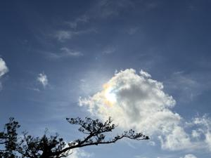
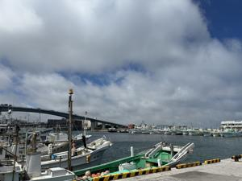
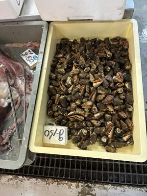
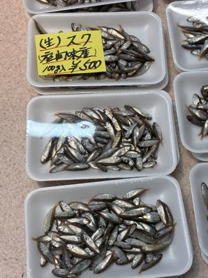

うるがいの話 ある日
最新: マガキガイ【うるがいの話 ある日】とは 一日だけのプログです
『うるがいの話』の最新一日だけのプログで、通信料が少なく経済的だ。カニの画像をクリックすると全ての日付が載る『うるがいの話』サイトを表示します
|
|
【うるがいの話】 うるがい(ｳﾙｶﾞｲ urugai)とは、『もずくがに』の名前でとても大きくなります。 |
|---|---|
|
|
【カミマヤーの話】 猫のことを方言でマヤーといいます。カミマヤー（kamimayaa）とは、神の猫のことです。 |
|
【たながぁの音楽】 たながぁ（ﾀﾅｶﾞｰ tanagaa）とは手長えびのことで、何種類かあり大きいのは車 エビぐらいになります。 |

|
【ぶながぁの話】 ぶながぁ(ﾌﾞﾅｶﾞｰ bunagaa)とは、赤い髪の毛、赤い身体、そして身長は１ｍ２０ｃｍ ぐらい、川の蟹を食べているの目撃された。場所は沖縄県国頭郡大宜味村のと ある村僕の隣近所に住んでいる爺さんから、聞いた話です。 |
|
|
【ギーマの話】 ギーマ(giima)とは、山原の里山に咲くスズランに似た、 花を付けます。実は食べられます、 気が付くと口の周りが紫になっています。 |
2026年07月17日 (金）マガキガイ
15:38


泊魚市場へ行きました。私の田舎では『ティラジャリ・インナー
』と言っていました。那覇では『ティラジャー』と言ってます。

今日が学期の終了日、明日から夏休みです。この時期になると海
にいくとマガキガイが、沢山いてオバーたちは、大きな背負い籠
に沢山入れてました。貝の身を油と砂糖で炒めたのが美味しいか
ったです。スクもありました、中学生のころは、村でもかなりの
漁師がいて、スクの漁に村中で集まっていきました。

５月２０日から、辞書を使って読んだ『ＦＯＲＥＳＴ』（１５０
頁）を５７日かけて読み終えました。
この本でしたら、アメリカでは小学生高学年から中学生くらいを
対象に書かれた児童文学です。英語を母語とする子どもなら小学
高学年程度で読めるレベルです。
物語は、リスたちの世界と１２歳の少女アンバーとの交流を描い
たファンタジーです。
森に住むリスたちの社会
人間との誤解から戦争になりかける出来事
友情や平和、相手を理解することの大切さ
をテーマにしています。単なる動物の物語ではなく、戦争や偏見
について考えさせられる内容なので、大人が読んでも楽しめる作
品です。
へー、小学生高学年ね。